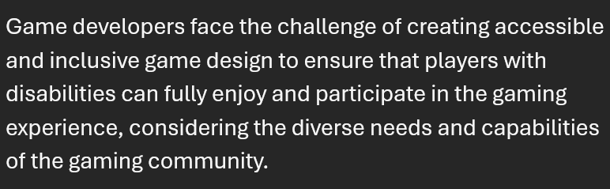
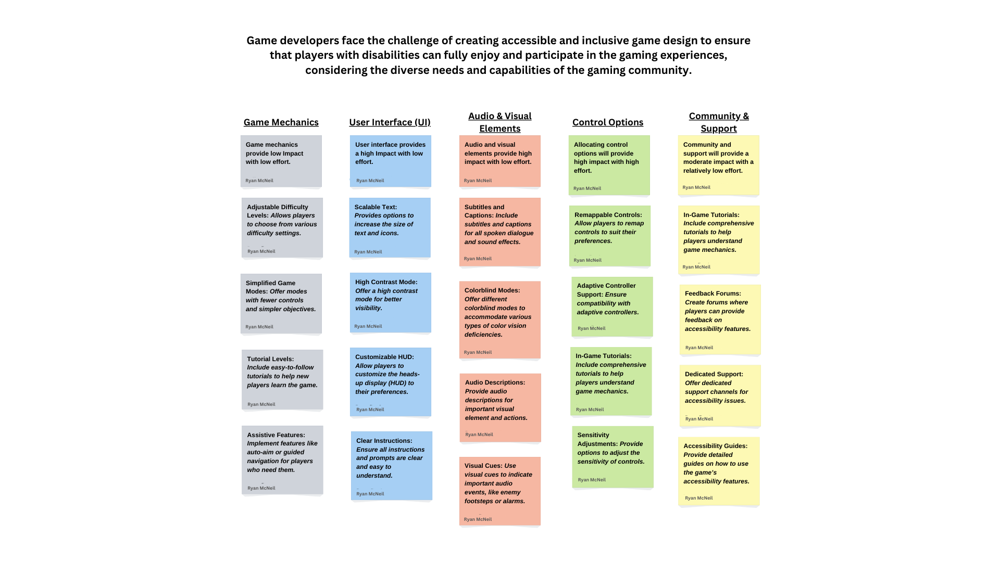
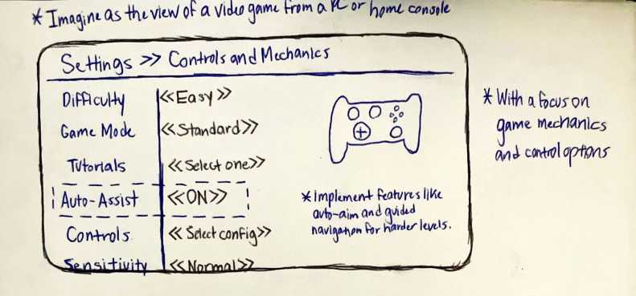

Hello! My name is Ryan McNeil, and I am so excited to share my personal portfolio with you. As a freshman at UofSC with an aspiring computer science major, prepping to become a software developer, I have always been about creating innovative and functional programs. But what sets me apart is my love for combining my technical skills with a creative and imaginative approach. I believe that the best software should not only function flawlessly, but also spark joy and inspiration in its users.
*I have a strong understanding of programming languages and software development, though I'm working my way up to become an expert in computer science.
*I also have a keen eye for detail and a knack for finding bugs and errors in software through my experience in software testing.
*Additionally, I have a passion for storytelling and have toned my skills in crafting engaging and imaginative stories through years of practice and development.
Fueling my passion for technology and innovation, I aim to harness the power of computer science to craft solutions that bridge the gap between possibility and reality. I seek to cultivate a blend of technical mastery and creative thinking, exploring uncharted territories in the digital realm. Through collaboration and relentless curiosity, I aspire to drive progress and make a tangible impact on the world around me.
What this problem statement entails is that game developers are tasked with the important responsibility of making sure that everyone, regardless of their abiltiies, can fully immerse themselves in the world of gaming. This means designing games that are accessible and inclusive for ALL players, taking into account the unique needs and capabilities of the diverse gaming community.
The following Affinity Diagram helps break down the complex problem at hand into manageable parts, making it easier to develop targeted solutions for creating accessible and inclusive game designs. The solutions I've tackled here include testing game mechanics, designing a satisfactory user interface (UI), incorporating applicable audio & visual elements, having a diverse array of control options, and fostering a community and support for said game(s).
The sketches show a prototype of my game that captures my vision for a particular software that incorporates the mainstay of my solutions; I've designed it in a way that would most likely function optimally within a video game's main menu, as indicated in the sketch itself.
This contains a few of my personal favorites from the Java projects that I've been working on in Algorithmic Design.
You can get in contact with me through my email: rmcneil@email.sc.edu
{kind=link}
{kind=link}
{kind=link}
{kind=link}